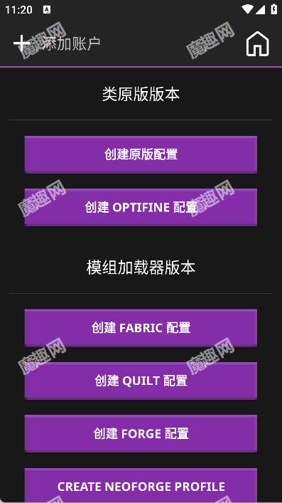

Amethyst 零基础上手：手机也能玩 Minecraft Java 版？一篇讲明白
第一次接触 Amethyst 完全不知道怎么下手？这篇从零带路，从装软件到第一次启动游戏，再到装模组和导入整合包，每个步骤都讲清楚——不需要任何技术基础。
这篇能带你从完全不懂到用起来——不需要任何技术基础，跟着点就行。
它到底是干嘛的
先打个比方：如果你玩过电脑上的 Minecraft，一定知道启动器是什么——帮你选版本、装模组、管理不同游戏环境的那个工具。去 Amethyst官网 看看就知道——它就是把这件事搬到了安卓手机上的启动器。
它不生成游戏内容，也不是模组本体。它的角色更像是一个管家：你告诉它要玩哪个版本、装哪些模组、用什么加载器，它帮你把这些组装好，然后把 Minecraft Java 版跑在手机上。
想象一下，在公交上掏出手机，进自己搭的那个有暮色森林、有匠魂模组的世界继续干活——这就是 Amethyst 存在的意义。
五分钟上手：从下载到第一次跑通
好消息是，Amethyst 的第一次启动流程设计得挺友好，不需要你提前配置一堆东西。以下五个步骤，每步几十秒：
第一步：装软件。先去 Amethyst 的官方下载拿到安装包，装好打开。第一次启动时它会申请一些存储权限——都给就行，因为启动器要在手机上建自己的游戏文件夹。
第二步：Java 运行时。Minecraft Java 版需要 Java 环境才能跑，Amethyst 启动时会检测你手机上有没有合适的 Java 版本。没有的话它会提示你下载一个，跟着提示走就好，不用纠结选哪个版本——启动器推荐的那个就对了。
第三步：创建第一个配置。启动器主界面有个"创建新配置"按钮，点进去。最简单的路线：
- 类型选 原版（VANILLA）——先别碰 Forge/Fabric，跑通原版再说；
- 游戏版本随便挑一个稳定版（比如 1.20.1），越新的越好；
- 给配置起个名字，比如"我的第一个世界"。

第四步：启动。配置列表里出现你刚创建的那一条，点它旁边的启动按钮。第一次启动需要下载游戏文件，网速决定等待时间——下载完自动进游戏。
第五步：创建存档。进游戏后点"单人游戏"→"创建新的世界"，选个游戏模式（生存/创造都行），点创建。
到这里，你已经在手机上玩到了完整的 Minecraft Java 版。五分钟没夸张。
上手后先玩这三个功能
跑通原版之后，新手最值得先碰的三个点——按顺序来，每个都能给你一个清晰的"这意味着什么"：
装第一个模组
电脑上装模组是把 .jar 文件丢进 mods 文件夹，Amethyst 在手机上也是一样的逻辑。关键区别只有一个：用复制，别用剪切。
从浏览器下载模组文件到手机后，打开启动器，进入你的配置，找到 mods 文件夹入口，把文件复制进去。然后重新启动配置。

你会在启动日志里看到模组被加载的信息。进游戏如果一切正常，说明你已经成功扩展了游戏内容。这意味着：你手机上的 Minecraft 不再只有原版那点东西，社区做的上千个模组都能尝试。
导入一个整合包
单模组是零散的体验，整合包是"开箱即用"的完整方案——作者帮你选好了模组、配好了设置、调好了内存分配，你拿到直接玩。
Amethyst 支持两种导入方式：
- 有文件：下载好 .mrpack（Modrinth 格式）或 .zip（CurseForge 格式），创建配置时选"创建整合包配置"，挑文件就行；
- 没文件：启动器内置了 Modrinth 整合包搜索，在创建配置的整合包流程里直接搜，搜到想要的点选中，启动器帮你搞定剩下的。
你会发现启动器在后台默默下载一堆东西，几分钟后配置就准备好了。这意味着：不用再一个一个找模组、手动排依赖，想要"科技包"还是"魔法包"，搜名字就行。
执行 JAR 按钮：别碰它装模组
主菜单上有个"执行 JAR 文件"按钮，名字很容易让人误会。这个按钮不是装模组用的——很多新手拿它去"装模组"，然后收到一堆崩溃。
它的真实用途是直接运行一个 .jar 文件，像电脑上双击运行 Java 程序那样。适合的场景只有一种：你拿到的是个带图形界面的安装器，需要"跑起来点下一步"才能完成安装的那种。
大多数模组没有图形界面，打开它们的 .jar 只会在日志里报错退出。所以：装模组丢 mods 文件夹，装加载器用启动器自动装，OptiFine 走专门的 OptiFine 配置——别让执行 JAR 按钮参合进来。更详细的参数和边界可以去Amethyst文档查。
小白的三个常见疑问
玩了一阵子后，这些问题大概率会碰到。提前知道省得瞎试：
Q1：装任何模组都崩，日志全是 Permission denied？
这不是模组的锅。是你把模组文件剪切进 mods 文件夹的——安卓文件系统在剪切时权限标志没跟着迁移，启动器读不了。
修法很简单：把 mods 里的模组全删掉，回到原下载位置，改用复制（不是剪切）重新放进去，重启配置就好。就这一个动作。
如果复制了还崩，再往下排查：先试一个别的模组（单个崩可能是兼容问题）、核对加载器类型（纯原版配置读不了模组）、检查是不是改过自定义路径。
Q2：听说 Sodium 能大幅提升帧率，我装了为什么黑屏？
Sodium 以及 Embeddium、Rubidium 这类性能模组，和手机上的 OpenGL 翻译层存在已知的兼容性问题。直接装大概率崩或黑屏。
绕行方案有两个：换用 Zink 系渲染器再试，或者走 OptiFine 路线（注意 OptiFine 的 Render Regions 在手机上不工作）。
不光是 Sodium，Create（关飞轮渲染或换 Zink）、Iris 光影（依赖完整 OpenGL）、ReplayMod（导出视频需要额外插件）等也有各自的适配细节。社区维护了一份长期更新的不适配清单，装模组前扫一眼能省大量试错时间。
Q3：启动器里还有个渲染器选项，我该选哪个？
Amethyst 内置了多种渲染器供选择，不同渲染器影响画面表现和模组兼容性。简单给个新手参考：Zink 系渲染器对模组兼容性更好，但画面可能不如 gl4es；gl4es 画面表现扎实，但部分模组（尤其是 Create 这样的大型内容模组）需要额外调整。
如果你还在摸索阶段，保持启动器推荐的默认选项就好。遇到模组兼容问题时，先尝试切换渲染器，再考虑其他方案。
写在后面
到这里，你已经知道 Amethyst 是干嘛的、怎么跑通、怎么装模组和导入整合包，也了解了几个新手最容易踩的坑。
一个进阶方向：试试 Fabric 或 Forge 加载器路线。原版玩腻了之后，加载器能帮你解锁更多模组生态，也是大多数整合包的基础。关于加载器配置和更多技术细节的参考资料，GitHub、Gitee、GitCode 上各有一份备份，随你选哪个。